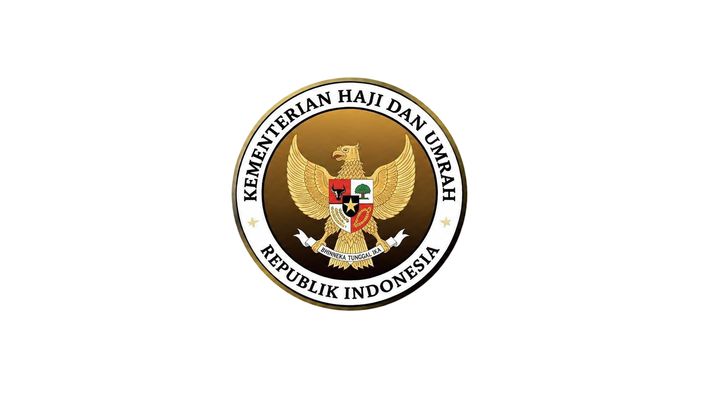

E-ABSENSI OUTSOURCING
Kemenhaj Kabupaten Jember
Nama Pegawai:
-- Pilih Nama Anda --
Moh. Hilmi Mas'ud
Dwi Fajrul Toyyibin
Mujib Abdurrohman
Wahyu Veriansyah
Siti Nurpadilah
OPSI ABSEN / IZIN:
HADIR (SCAN DI KANTOR)
IZIN DATANG TELAT
IZIN TIDAK MASUK (BISA DARI RUMAH)
Alasan Izin (Opsional):
Kirim Izin (Tanpa Scan Barcode)
Scan QR Code Resmi Kantor